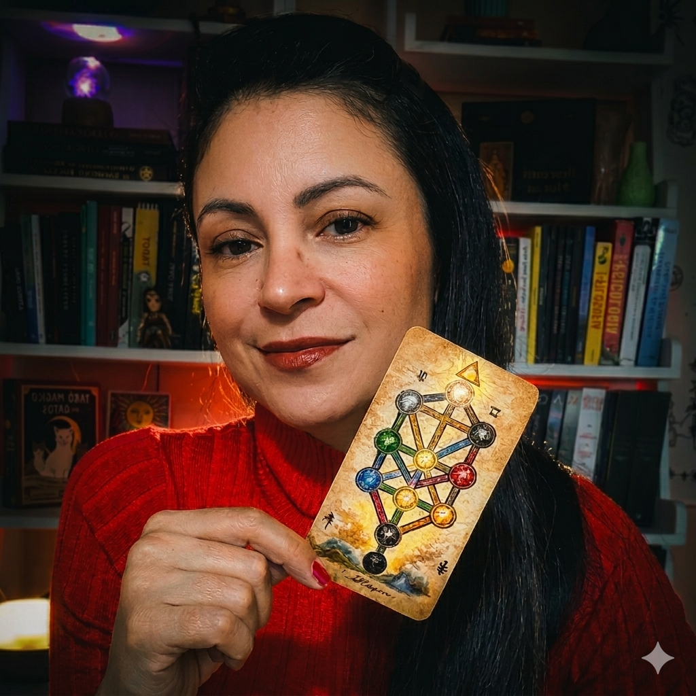

✦
Base Hermética
Vá além do significado superficial. Entenda a filosofia e o simbolismo oculto que deram origem ao Tarot para ter uma base teórica inabalável.
Você não precisa passar anos estudando livros densos de Cabala para ler Tarot. Eu já fiz esse caminho por você e trouxe a integração prática que vai transformar sua leitura em um direcionamento profissional e assertivo.
Aprenda a interpretar com lógica, profundidade e segurança real, transformando cada leitura em um direcionamento mais consciente, profissional e assertivo.
Se você já abriu o Tarot e travou no meio da leitura, ou sentiu que estava apenas repetindo significados decorados, não te falta intuição. Falta conhecer a estrutura por trás das cartas.
Aqui você irá conhecer os segredos que os cabalistas e mestres iniciados deixaram nas cartas através dos símbolos.
Vá além do significado superficial. Entenda a filosofia e o simbolismo oculto que deram origem ao Tarot para ter uma base teórica inabalável.
Pare de depender de intuições soltas. Aprenda o sistema da Árvore da Vida para conectar as cartas entre si e sustentar qualquer leitura com lógica e fluidez.
Desenvolva a segurança para realizar direcionamentos profissionais. Aprenda a interpretar com responsabilidade, entregando clareza real para quem senta à sua mesa.
Assim você entende se essa formação realmente combina com o momento que você está vivendo no Tarot.
Um vídeo para você sentir a energia, a profundidade e a proposta do Tarot Cabalístico na Prática.

Psicoterapeuta, taróloga e numeróloga Cabalista há mais de 10 anos. Decidi reunir todo o meu estudo de Hermetismo e a fundamentação dos maiores mestres de ordens iniciáticas em um método prático para o Tarot.
Minha missão é que você domine a simbologia das cartas e transforme interpretações rasas em leituras profissionais e verdadeiramente transformadoras.
Alguns retornos de alunas que já estão vivenciando o Tarot Cabalístico na Prática.
Eu me surpreendi com a riqueza de conhecimentos da Professora que aborda com perfeição a conexão da Cabala com o tarot. O curso é excelente para todo tipo de alunos, desde iniciante (meu caso) até quem já tem mais domínio das leituras. Com os conteúdos, eu iniciei a tiragem para mim, mas já vou ampliar para amigos... estou adorando o aprendizado!
Gente, esse curso de tarô tem sido um verdadeiro divisor de águas na minha vida. Diferente de tudo que eu já estudei antes, aqui eu não aprendi apenas significados de cartas, eu aprendi a sentir, interpretar e confiar na minha intuição de forma profunda e segura. O grande diferencial, pra mim, está na forma como o conteúdo é passado: claro, direto, mas ao mesmo tempo extremamente transformador. Além disso, o fato de ser um tarô cabalístico traz uma profundidade única, muito mais rica e estruturada do que outros cursos que já fiz. Não é só técnica, é conexão. É um verdadeiro despertar. Em pouco tempo de estudo, eu já me senti segura o suficiente para começar a fazer tiragens, algo que antes parecia distante pra mim. Hoje eu me sinto muito mais confiante nas minhas leituras, mais alinhada com a minha espiritualidade e, principalmente, mais preparada para orientar outras pessoas. Esse curso não só aprimorou meu conhecimento, ele mudou a forma como eu enxergo o tarô e o meu próprio caminho. Sem dúvidas, foi um dos melhores investimentos que já fiz na minha vida.
Fazer o curso de Tarô Cabalístico com a Professora Luna foi uma experiência simplesmente transformadora na minha vida. Muito mais do que aprender sobre as cartas, eu mergulhei em um conhecimento profundo, espiritual e cheio de significado. A didática dela é incrível, clara, acolhedora e ao mesmo tempo muito profunda. Cada aula traz não só entendimento técnico, mas também expansão de consciência. Senti que realmente evoluí como taróloga e como ser humano. O Tarô Cabalístico, através da forma como ela ensina, deixa de ser apenas um oráculo e passa a ser uma ferramenta poderosa de autoconhecimento e conexão espiritual. Sou imensamente grata por todo o aprendizado, pela troca e pela energia transmitida em cada encontro. Recomendo de olhos fechados para quem deseja se aprofundar de verdade no Tarô e na espiritualidade.
Não. A formação foi desenhada para te levar do zero absoluto ao domínio profissional. Se você nunca pegou em uma carta, vai aprender a base correta desde o primeiro dia, sem vícios de interpretação. E se você já é taróloga, vai conhecer a estrutura para dar profundidade e segurança real às suas leituras.
Definitivamente, não. Decorar significados soltos te dá informação, mas não te dá a segurança para sustentar uma leitura real. Nesta formação, você aprende a estrutura por trás das cartas. Através da Cabala, você desenvolve um raciocínio lógico e simbólico para interpretar qualquer carta com profundidade, sem depender de listas prontas, vídeos de última hora ou manuais de terceiros. Você deixa de repetir o que leu e passa a ler o que vê.
Sim. O erro de muitos é tentar estudar a Cabala de forma puramente teórica e isolada. Nesta formação, eu utilizo a Cabala como a base que sustenta a leitura. Eu já fiz o trabalho pesado de anos de estudo hermético e sintetizei tudo em uma linguagem clara e aplicável. Se você tem disposição para aprender um método estruturado, você vai dominar o raciocínio cabalístico passo a passo, mesmo que nunca tenha aberto uma carta antes.
A maioria dos cursos ensina você a decorar significados soltos e palavras-chave. O problema é que, quando as cartas saem da mesa, quem decora acaba travando. No Tarot Cabalístico na Prática, você aprende a pensar o Tarot através da Árvore da Vida e a mecânica por trás de cada carta, o que te dá autonomia para ler qualquer tiragem com profundidade e segurança, sem depender de colinhas ou manuais de terceiros.
O seu acesso é vitalício. Isso significa que você pode estudar no seu próprio ritmo, rever as aulas quantas vezes precisar e acompanhar todas as atualizações e novos conteúdos que forem adicionados à plataforma. O Tarot é um estudo de uma vida inteira, e eu quero que esta formação seja sua base segura de consulta por anos.
Com certeza. Você não estará sozinha(o) nessa jornada. Temos um grupo exclusivo de alunos no WhatsApp, onde eu mesma acompanho as discussões e tiro dúvidas. Além disso, teremos aulas de acompanhamento e evolução ao vivo, onde analisamos casos práticos e aprofundamos o conteúdo juntos.
Sim. Você receberá o Manual de Tarot Cabalístico Sistematizado. É um material em PDF completo, organizado para facilitar sua compreensão e servir como guia de consulta rápida durante suas práticas. Ele foi desenhado para ser o braço direito da sua leitura, unindo a simbologia técnica à prática imediata. Este é um material vendido à parte para não alunos, que você recebe gratuitamente nesta formação.
Ao entrar na formação, você acessa um estudo comprometido com profundidade, método e responsabilidade interpretativa.
Ou no pix por apenas 497,00
QUERO ACESSAR A FORMAÇÃOPAGAMENTO 100% SEGURO COM ACESSO IMEDIATO.
Se você sente que chegou a hora de sair do raso e estudar com consciência, método e verdade, o seu momento de começar é agora.
Quero aprender com a Luna